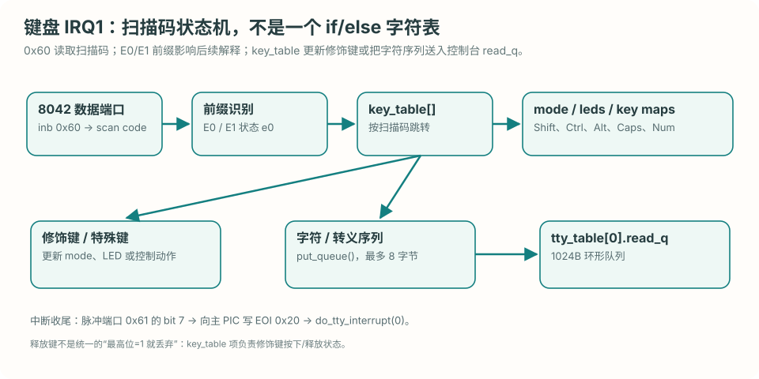
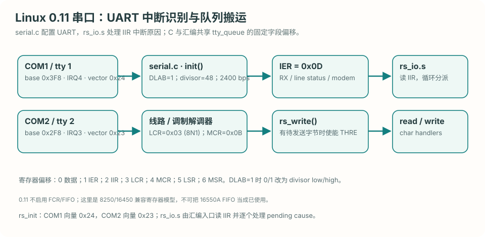

键盘与串口：8042 扫描码、8250/16450 UART 和 IRQ
沿 keyboard.S、serial.c、rs_io.s 追踪键盘和 RS-232 两条输入/输出链路。纠正 16550A FIFO、2400 baud、IRQ3/IRQ4 向量与扫描码状态机等版本细节。
keyboard.S · 8042 · 2400 baud两类设备都把字节送进 TTY，但中断协议不同
键盘不是一个“字符设备端口”，UART 也不是把一个字节直接送给用户进程。键盘控制器在 IRQ1 到来时让内核从端口 0x60 读取扫描码；串口控制器在 IRQ3 或 IRQ4 到来时，需要内核先查询 UART 的中断识别寄存器，再按接收、发送、线路状态或 modem 状态分别处理。两条底层路径最后都把输入字节放进 TTY 的 read_q，并调用 do_tty_interrupt() 让公共代码继续执行。
本章讨论的是 0.11 的 IBM PC/AT 兼容键盘控制器和 8250/16450 风格串口寄存器。文件名和寄存器布局可以与 16550 系列相似，但不能由此推断 16550A FIFO 已被初始化或使用。


IRQ1 入口：读取扫描码并确认中断
console.c 的 con_init() 安装 set_trap_gate(0x21,&keyboard_interrupt)，并清除 PIC 主片掩码中的 IRQ1 位。因为 8259 主片被重映射到 0x20–0x27，IRQ1 对应向量 0x21。
汇编入口 _keyboard_interrupt 保存通用寄存器和段寄存器，把 DS/ES 切换到内核数据段，从端口 0x60 读一个扫描码。若字节是 0xE0 或 0xE1，它更新前缀状态 e0，不把前缀当成普通字符；否则用 key_table(,%eax,4) 跳到对应扫描码处理例程。
inb $0x60,%al
cmpb $0xe0,%al
je set_e0
cmpb $0xe1,%al
je set_e1
call key_table(,%eax,4)
movb $0,e0
/* pulse port 0x61 bit 7 */
movb $0x20,%al
outb %al,$0x20 /* PIC EOI */
pushl $0
call _do_tty_interrupt端口 0x61 的 bit 7 会先置位再清除，用于确认/复位键盘控制器的中断逻辑；随后向主 PIC 端口 0x20 写 EOI 0x20，再调用 do_tty_interrupt(0)。这不是现代 APIC/IOAPIC 的中断完成流程。
key_table：按下/释放、修饰键和字符映射
keyboard.S 的 mode 字节维护 Caps、Alt、Ctrl、Shift 状态，leds 保存 Num/Caps/Scroll Lock 灯状态。Shift/Ctrl/Alt 的按下和释放分别跳到不同处理例程更新 mode 位；Caps/Num/Scroll 还可能通过向 0x60 发送 0xED 命令和 LED 位掩码更新键盘灯。
普通键通过编译时选择的 key_map、shift_map、alt_map 映射字符；数字小键盘受 Num Lock 和 Shift 影响；方向键可形成 ESC 前缀序列；功能键形成 ESC[[A 一类序列。Ctrl+Alt+Del 的特殊路径也在这份汇编里。由此可见，键盘扫描码不等于 ASCII 字节：同一个物理按键在不同 mode 下可以生成不同字符或控制动作。
mode:
bit 0 left shift
bit 1 right shift
bit 2 control
bit 4 alt
bit 6 caps-lock state
bit 7 caps key pressed latch
e0:
0 ordinary scan code
1 E0 prefix
2 E1 prefix不要用现代 USB HID usage 或现代 Linux input subsystem 的 input_event 来解释这条 1991 年路径；它接收的是传统 PC 键盘扫描码并在内核汇编里直接转字符。
put_queue：多字节序列进入控制台 read_q
put_queue 从 table_list[0] 取得控制台的 read_q，按 head 和 tail 计算下一个槽位，使用 size-1 掩码循环。它最多从 %ebx:%eax 取出 8 个字节，按低字节到高字节顺序逐个写入队列；若队列满，当前多字节序列会被丢弃。成功写入后会唤醒等待队列中的进程。
中断入口随后调用 do_tty_interrupt(0)，该函数在 tty_io.c 中只是调用 copy_to_cooked(tty_table+tty)。所以键盘汇编不负责完整的规范行编辑；它只负责扫描码解释、产生字节/转义序列、放入原始输入队列。
UART 寄存器：同一偏移因 DLAB 而有不同含义
serial.c 将 tty_table[1].read_q.data 初始化为 0x3F8（COM1），将 tty_table[2].read_q.data 初始化为 0x2F8（COM2）。传统 8250/16450 UART 的常见寄存器偏移为：0 数据/除数低字节、1 中断使能/除数高字节、2 中断识别、3 线路控制、4 modem 控制、5 线路状态、6 modem 状态。线路控制寄存器 LCR 的 DLAB 位决定偏移 0/1 当前是数据/IER 还是除数锁存器。
outb_p(0x80,port+3); /* DLAB=1 */
outb_p(0x30,port); /* divisor low: 48 */
outb_p(0x00,port+1); /* divisor high */
outb_p(0x03,port+3); /* DLAB=0, 8N1 */
outb_p(0x0b,port+4); /* DTR, RTS, OUT_2 */
outb_p(0x0d,port+1); /* all interrupts but transmit */UART 基准时钟 1.8432MHz 经 16 分频和除数 48，得到 1,843,200/(16×48)=2400 baud。LCR=0x03 表示 8 数据位、无校验、1 停止位（8N1）；MCR=0x0B 打开 DTR、RTS 和 OUT_2。初始化时 IER 0x0D 打开接收、线路状态和 modem 状态中断，但暂不打开发送保持寄存器空中断。
IRQ3/IRQ4：rs_io.s 查询 IIR 后分派原因
rs_init() 安装 COM1 的 rs1_interrupt 到向量 0x24（IRQ4），COM2 的 rs2_interrupt 到 0x23（IRQ3），并清除主 PIC 掩码中的 IRQ3/IRQ4 位。中断入口在 rs_io.s 中，先根据当前 tty 的 read_q.data 取端口基址，再读取 base+2 的 IIR。IIR bit 0 为 1 表示没有待处理的中断；否则根据原因编号索引 jmp_table，循环处理直到无待处理原因。
jmp_table:
.long modem_status, write_char, read_char, line_status
/* IIR 原因编码 0,2,4,6 → 上述四个处理器 */
read_char 从数据寄存器读取一个字节，写进相应串口的 read_q，然后调用 do_tty_interrupt(tty)。write_char 从 write_q 取一个字节写到 UART 数据端口；队列空时清除 IER 的发送中断使能位，避免空转中断。modem_status 读取 MSR 清除 modem 状态中断，line_status 读取 LSR 清除线路状态中断。最后向主 PIC 发送 EOI。
为什么本章不把 16550A FIFO 当作已启用
16550A 在寄存器偏移 2 写入 FCR 可以控制 FIFO；但 Linux 0.11 的初始化把 base+2 当作 IIR 读取，代码中没有设置 FIFO Control Register，也没有根据 FIFO trigger level 批量收发的逻辑。发送与接收处理器按字符操作队列，rs_io.s 每次读一个字节或写一个字节。
因此最严谨的表述是：它使用 PC 串口的兼容寄存器接口和 8250/16450 风格中断协议。虽然 16550 系列的基本寄存器映射相近，但不能写成“Linux 0.11 初始化并启用了 16550A 16-byte FIFO”。
为什么 `0x3F8+2` 不能一直叫 FIFO Control Register？（展开核对）
因为寄存器名称取决于访问方向：读偏移 2 是 IIR，写偏移 2 才是 FCR。0.11 的 rs_io.s 在中断处理中读取该偏移，未见初始化 FCR 的写操作。
实验：手算 2400 baud 并定位一次接收中断
grep -n 'set_trap_gate(0x21\|video_mem_start' kernel/chr_drv/console.c
grep -n '0xe0\|0xe1\|key_table\|put_queue\|0x60\|0x61' kernel/chr_drv/keyboard.S
grep -n '0x3f8\|0x2f8\|0x30\|0x0d\|set_intr_gate' kernel/chr_drv/serial.c
grep -n 'IIR\|jmp_table\|read_char\|write_char\|0x20' kernel/chr_drv/rs_io.s- 从 tty_table 确认 COM1 base 为
0x3F8，COM2 为0x2F8。 - 从 divisor=48 计算 2400 baud，确认 LCR 0x03 为 8N1。
- 从 rs_init 确认 COM1 向量 0x24、COM2 向量 0x23。
- 在 rs_io.s 找到 IIR 读取和 read_char，追踪输入字节进入 read_q 后调用 do_tty_interrupt。
该练习只验证寄存器常量和静态控制流；没有真实串口回环设备，因此不宣称做过波特率误差或 FIFO 吞吐测试。
源码证据
- kernel/chr_drv/keyboard.S：键盘扫描码、前缀、修饰键、put_queue。
- kernel/chr_drv/console.c：IRQ1 向量安装和 PIC unmask。
- kernel/chr_drv/serial.c：UART 初始化、COM1/COM2 向量、发送中断使能。
- kernel/chr_drv/rs_io.s：IIR 分派、接收/发送、EOI。
- kernel/chr_drv/tty_io.c：read_q 与 copy_to_cooked 的衔接。
下一章从硬件输入转向故障现场：printk 到底保存了什么，异常处理器怎样打印寄存器，以及 Bochs 内部调试器如何区分物理、线性和虚拟断点。